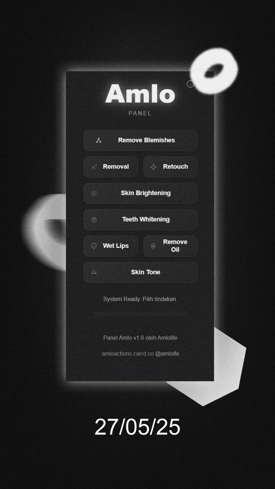

Boost your Photoshop workflow with one-click AI retouch tools — Skin Smoother, Blemish Remover, Teeth Whitening, and more. Clean. Fast. Powerful.
Download Now One-click skin cleanup and tone balancing.
Brighten smiles instantly without overdoing it.
Automatically detect and select acne spots offline.
Add shine and gloss to lips in seconds.